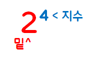

1. 소수와 합성수
1. 소수와 합성수
소수
1과 자기 자신만을 약수로 가지는 수
소수의 약수는 2개이다
예시) 2의 약수는 1, 2 이므로 2는 소수이다.
합성수
1과 자기 자신 이외에도 다른 수를 약수로 가지는 수
합성수의 약수는 3개 이상이다
예시) 4의 약수는 1, 2, 4 이므로 4는 합성수이다.
2. 거듭제곱
거듭제곱
2+2+2+2를 2X4로 간단하게 나타낼 수 있는 것처럼
2X2X2X2도 간단하게 나타낼 수 있다.
이때, 여러번 곱해진 숫자 2를 쓰고, 2의 오른쪽 위에 곱해진 수 4를 쓴다.
따라서 2X2X2X2=2⁴이다.
거듭제곱을 이루는 요소
거듭제곱에서 여러 번 곱해진 수를
밑,
밑을 곱한 횟수를
지수
라고 한다.
